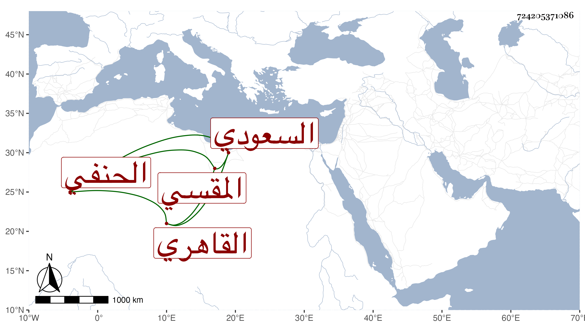

0902Sakhawi.DawLamic.ITO20230111-ara1.EIS1600.724205371086
Biography ID: 724205371086
494
محمد بن علي بن عبد الغني البدر السعودي القاهري المقسي الحنفي الماضي أبوه ويعرف كهوبا بن الوقاد حرفة جده . نشأ فحفظ القرآن وغيره وكان يصحح على المحب بن الشحنة وسمع مني ثم خالط ذوي السفه وأمسك غير مرة . وماتت له زوجة فورثها ، وقربه ابن المغربي الغزي قاضي الحنفية واستنابه بل عمل نقيبه . وأنشأ دارا وكان من الفساد بهما ما لا يوصف مع كراهة كل منهما في الآخر كما هي سنة الله فيمن هذا سبيله وكاد أن يهلكه ثم صار عند الذي يليه بمحل دون ذلك فما وسعه إلا الحج وجاور سنة وربما قرأ فيها في العربية وغيرها مع بعده عن هذا المهيع ثم عاد ، وهو من سيئات الوقت مع جهله ولكنه إلى الوكلاء أقرب .
